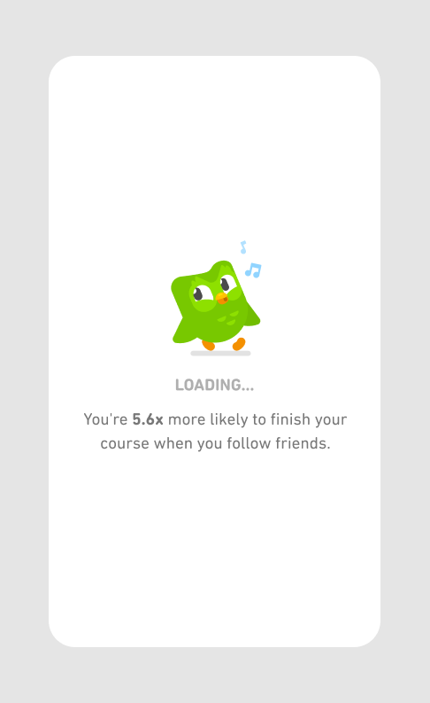

One example of this principle in action is how we show users a loading screen when they’ve finished the lesson and we are saving their progress in the backend. By showing a loading screen, we convey that the interaction was successful and no further action is expected from the user. This simple indicator can help reduce user confusion or frustration. Imagine what would happen if we gave the user absolutely no feedback that the app is loading – they may try to tap the button again several times, assume the app has become non-responsive, and quit.  When applying this principle, it's important to keep the principle of simplicity in mind. You should never overwhelm users with information. Instead, prioritize displaying only information that the learner truly needs to know at that moment, and remove the rest.
CONTINUE